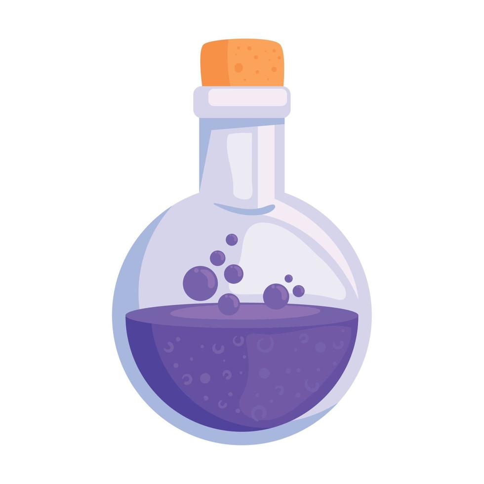

Sleeping Potion

Description
Sleeping potions are a classic staple in any witch's pantry.
However many less experienced witches will find the potion daunting, due to the extreme side effects that may occur when improperly prepared.
The key to a good sleeping potion is practice and attention to detail.
And of course don't forget having a good recipe!
This is a recipe I believe I have perfected.
When done correctly, one vial will put the drinker to sleep for exactly 8 hours.
Nothing will wake them, not even a roccous goblin raid!
Side effects may include purple extremities, vivid nightmares, death, and hiccups.
Cheers!
Bethilda
Ingredients
- 10 Mouse toe bones
- 4 Maple seeds
- 1 Dried wolf spider
- 1/2 Cup Clover leaves
- 4 Drops of pine sap
- 1 Tbsp Sugar (optional)
Steps
- Add mouse bones to a small iron cauldron over a medium flame. To maximize effectiveness the bones should all come from the same mouse.
- Once cracks begin to form on the bones add 4 cups of water to the hot cauldron.
- Crush the maple seeds along with the wolf spider, then add to the cauldron.
- Allow to boil for 6 - 8 minutes, stiring occasionally, or until floating bubbles appear.
- Sprinkle clover leaves on the top of the mixture and let sit until leaves dissolve. Do not stir the cauldron until leaves are completely dissolved.
- Place sap drops onto the mixing spoon then stir the cauldron clockwise with it exactly 18 times. The potion will be a dark purple color when stirring is complete. If the potion is green DO NOT DRINK.
- If desired, sprinkle sugar into the potion to improve the taste. (This is reccommended if giving the potion to unsuspecting victims to counteract bitter flavour)
- Pour into 6 equally sized glass bottles and use within 4 months.